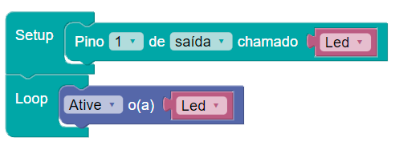
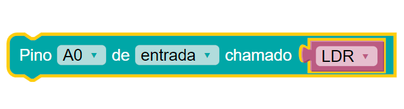

// C++ CODE
Dica 1: Comece sua criação com o setup, nele você define como os elementos serão utilizados na sua aplicação: pinos correspondentes no arduino, e sua utilizado como entrada ou saída.
Após o Setup, utilize o Loop para desenvolver a sua sequência de passos
Exemplo:

Dica 2: Para criar o elemento utilizado, como led, motor, buzzer, entre outros, vá até 'variáveis'.
Dica 3: Dentro do setup apenas é utilizado o bloco de definição de pino, como este abaixo:

Você pode incluir vários blocos iguais a esse dentro do setup, um para cada pino que você utilizará para sua aplicação.